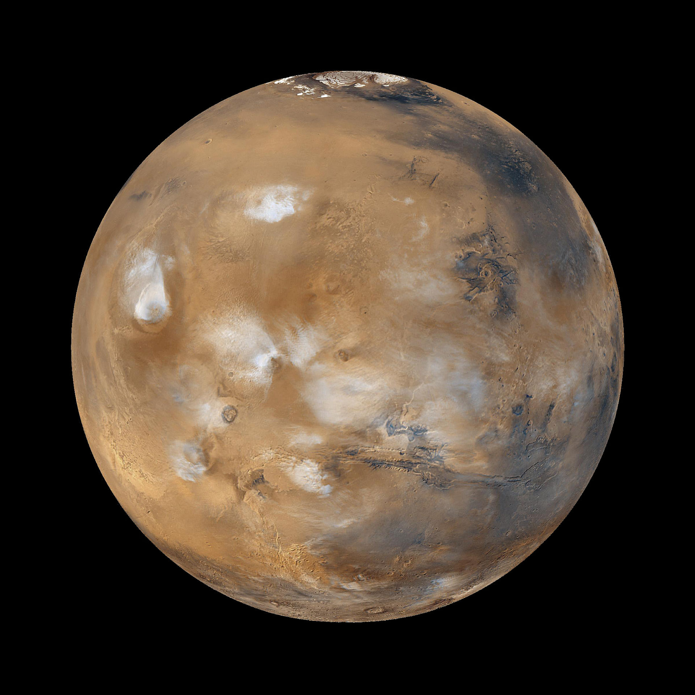

- Semi-major axis:
- 108 208 000 km
- Orbital period:
- 224.701 d
- Mean radius:
- 6051.8 km
Venus
Venus is the second planet from the Sun, orbiting it every 224.7 Earth days.

A planet is a celestial body, orbiting a star, that is massive enough to be gravitationally rounded and has "cleared the neighbourhood" around its orbit.
"I think of space not as the final frontier but as the next frontier."- Neil Degrasse Tyson
Unfortunately, Pluto is no longer a planet but a dwarf planet. Sometimes I think, Pluto still deserves full planet hood.
Mars is named after the Roman god of war, it is often described as the "Red Planet" because the iron oxide prevalent on its surface gives it a reddish appearance.
Venus is the second planet from the Sun, orbiting it every 224.7 Earth days.